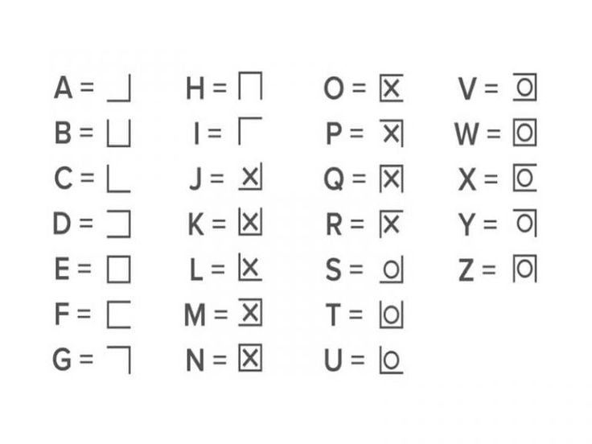
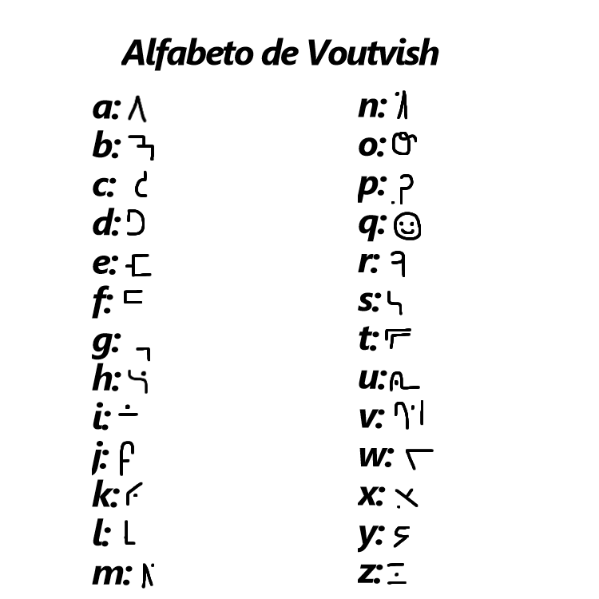
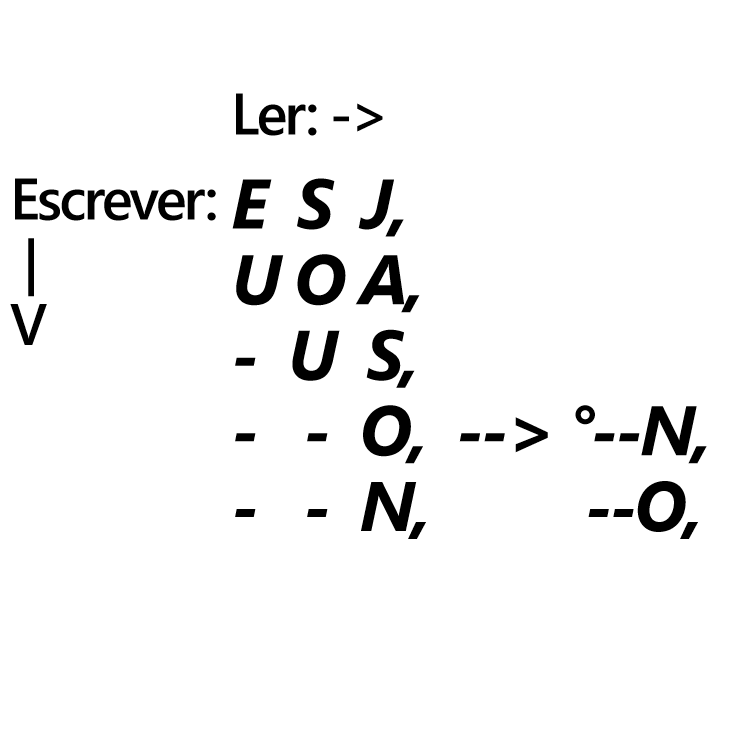

Esta é uma biblioteca de cifras, alfabetos, linguas, enigmas e códigos. Procure o que quiser pesquisando aqui!
(este site foi feito originalmente para um certo enigma que estou fazendo, e provavelmente o meu professor vai tentar decifra-lo)
* ᑕIᖴᖇᗩS *
* Vigenère
A cifra de Vigenère funciona mudando a posição das letras de acordo com uma palavra(senha), então vamos pegar cada letra da minha palavra(senha) e vou trocar pelo numero dela no alfabeto
Logo após isso vamos andar o numero de casas correspondentes a senha na nossa palavra codificada(contamos a quantidade de casas começando da letra original)
Se a senha não tiver a mesma quantidade de letras que a palavra(sendo mais ou menos letras) iremos cortar a senha ou repetir parte dela.
Exemplo :
Palavra: Jason. Senha: Oi. O = 15, I = 9. resultado da senha = 15, 9 (Oi)
Oi = 2 letras, Jason = 5 letras. logo a senha vira: Oioio = 15, 9, 15, 9, 15
J+15 = X, A+9 = I, S+15 = G, O+9 = W, N+15 = B. Jason = XISGWB.
* César
A cifra de César funciona mudando a posição das letras nas palavras usando "sifts"(indo um certo numero fixo de casas para esquerda ou para a direita).
Exemplo :
Jason + César com shift 6 para direita
Resposta de Jason com shift 6 é: OFXTS.
* Atbash
A cifra de Atbash funciona trocando a letra da palavra codificada pela letra do alfabeto ao contrario.
Exemplo :
Alfabeto normal.
A-B-C-D-E-F-G-H-I-J-K-L-M-N-O-P-Q-R-S-T-U-V-W-X-Y-Z
Igual a...
Alfabeto ao contrario.
Z-Y-X-W-V-U-T-S-R-Q-P-O-N-M-L-K-J-I-H-G-F-E-D-C-B-A
Então logo, Jason em Atbash fica = Qzhlm.
* Código morse
O código morse funciona mudando as letras do alfabeto por traços ("-") e pontos (".")
Para usar o código morse é como usar o alfabeto normal, apenas quando for escrever uma palavra deixe um espaço entre uma letra e outra, e quando terminar uma palavra e começar a próxima adicione um "/".
Alfabeto do código morse abaixo.

Exemplo :
Jason = .--- .- ... --- -.
Sou uma aranha = ... --- ..- / ..- -- .- / .- .-. .- -. .... .-
* Pigpen🐷
O alfabeto Pigpen funciona como o alfabeto normal só mudando a estética do caractere.

Exemplo :
Jason = ⟓⅃v⟃⊡
Eu sou uma aranha = □< v⟃< <⟄⅃ ⅃⟔⅃⊡⊓⅃
eu recomendo usar algum site para codificar uma palavra no Pc ou celular.
- Decoder Pigpen -* Rutsh
A cifra de Rutsh funciona usando duas cifras, cifras de Atbash e a A1Z26 logo depois adicionando uma regra para separar as letras de palavras, e palavras de palavras
ficou meio estranho isso ksks
Exemplo :
Eu sou Jason + Atbash = Vf hlf Qzhlm, Vf hlf Qzhlm + A1Z26 = 22 , 6, 8, 12, 6, 17, 26, 8, 12, 13
Agora para separar letras da palavras usamos apenas um traço ("-") e para separar palavras usamos dois traços ("--"), então fica:
22-6--8-12-6--17-26-8-12-13
(Essa foi minha primeira cifra, então é meio paia mesmo kksk)
* Voutvish
O alfabeto Voutvish funciona como o alfabeto normal só mudando a estética do caractere.
(A fonte do alfabeto não existe em teclado ou na web porque é meio que meu e nunca postei nada sobre, menos esse site obviamente)

* Seltaeb
Por enquanto a minha cifra mais complexa ksks
A cifra de Seltaeb funciona pegando cada primeira letra da frase para criar outra palavra, e depois organizando a frase com (,), (-) e (").
(,) = separar palavras, (-) = significa que não tem mais letras nessa parte, (") = termina a frase.
como "Eu brincava = eb,ur,-i,-n,-c,-a,-v,-a"" fica quase toda a palavra escrita normalmente, nesse caso troque a sequencia virando "Eu brincava = eb,ur,°a-,v-,a-,c-,n-,i-""
A cifra também funciona se você fizer uma tabela com a palavra sendo escrita de cima para baixo, e codificada lendo da esquerda para direita.
Exemplo :
Eu sou Jason:
Normal:
Eu sou Jason = esj,uoa,-us,°n--,o--"
Usando Tabela:

o nome da cifra ao contrario fica "beatles", fica ai a ref ksk
Tambem existem milhares de sites e videos no youtube por exemplo que explicam e decodificam essas cifras e enigmas.
Recomendo bastante um canal em expecifico o nome é Rentune, se puder segue ele lá
foi ele quem me "mostrou" essa parte do mundo, e por consequencia acabei criando esse site ksksk.
A e eu deixei o site nesse estilo porque eu adoro coisas frutiger aero, é digamos meio nostalgico e tambem bonito.)
(A musica que toca é do youtube o nome é "2000s ~𝒩𝑜𝓈𝓉𝒶𝓁𝑔𝒾𝒸~ Frutiger Aero Playlist"
- Canal Rentune - - Perfil do JasonAranhudo no Github -- Pagina feita pelo usuario do Github JasonAranhudo -